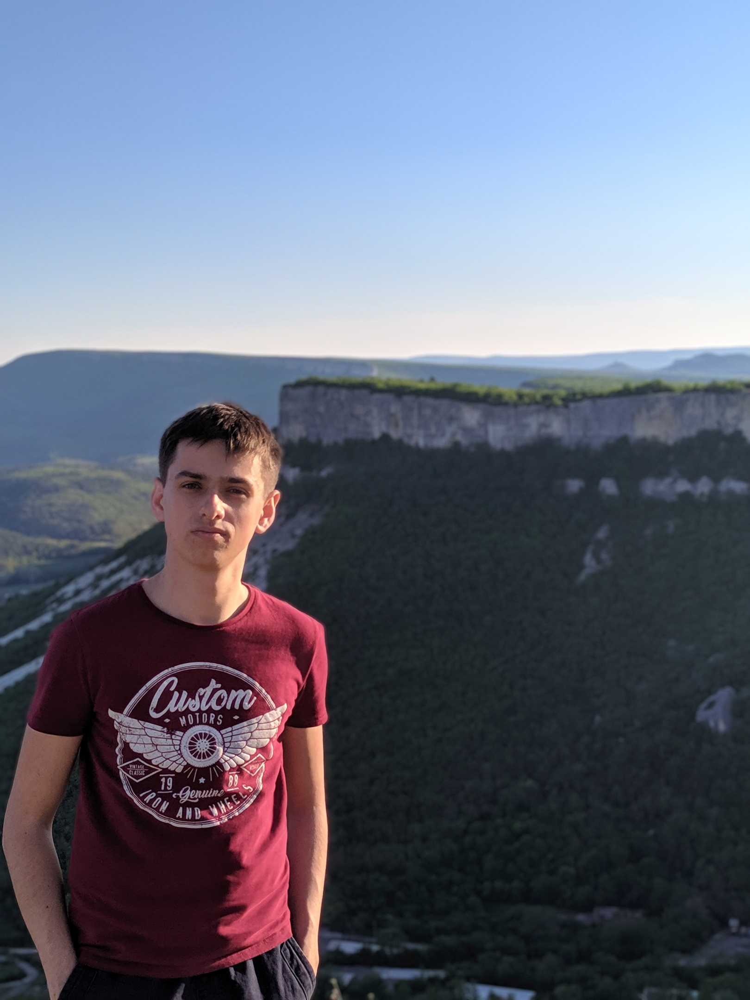

Немного обо мне
|  |
Мужчина, 18 лет, родился 17 февраля 2002 Меня зовут Артём. Родился я в Бахчисарае, но в данным момент учусь и проживаю в городе Севастополь. Учусь в Севастопольском государственном университете на первом курсе факультета информатики и вычислительной техники. Основным моим увлечением, которое даже стало для меня работой, является разработка веб-сайтов. Начинал я примерно года 2.5 назад, делая простые сайты по типу этого. Изучив HTML, CSS, JS, PHP и набравшись опыта стал делать сайты на заказ. Имеется опыт работы на фрилансе и в команде в офисе. В данный момент разрабатываю интернет-магазин для себя на фремворке для PHP, который называется Yii2. |